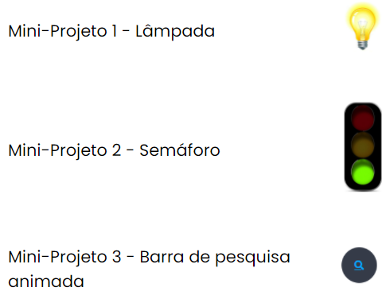
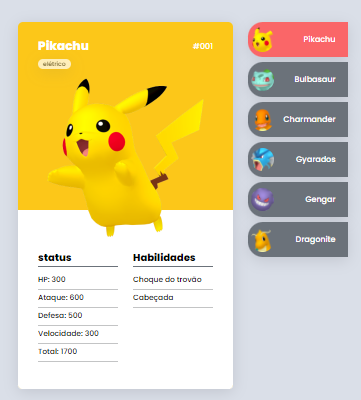
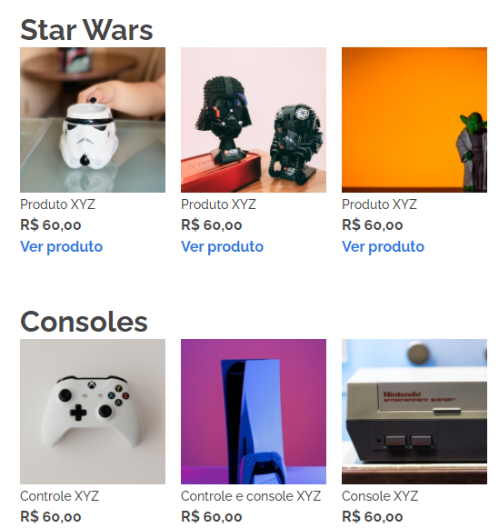

Mini-projetos
Seleção de mini-projetos, utilizando HTML, CSS e JavaScript (página em constante evolução.)

Pokedex
Projeto realizado com o auxílio do canal do Youtube "Dev em dobro", onde foi elaborado uma pokedex, utilizando HTML, CSS e JavaScript

Desafio Alura
Resolução de um desafio proposto pela plataforma de ensino Alura.